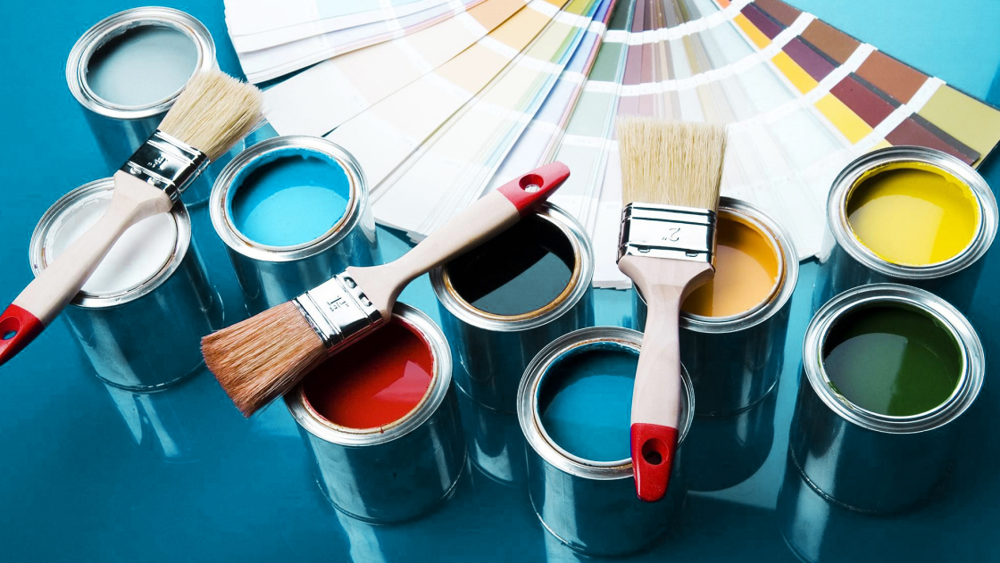

2-ЭГА

2-этилгексилакрилат (2-ЭГА) — современный продукт на основе которого производят акриловые краски и лаки. Применяется в химической промышленности для производства компонентов лакокрасочных материалов, дорожной разметки, клеев, герметиков, лакокрасочных эмульсий.
«Потребление» в России акрилсодержащих дисперсий, как и красок, непрерывно растёт, примерно на 4 % в год. Это обусловлено тем, что продукты на основе 2-ЭГА:

более влагостойкие (лучше отталкивают воду);
меньше выгорают;
крепче держатся
на поверхности изделий
(имеют хорошую адгезию);
на поверхности изделий
(имеют хорошую адгезию);
хорошо наносятся при
отрицательных температурах.
отрицательных температурах.
В 2016 году в НИОСТе разработали собственную технологию производства 2-ЭГА. Продукт синтезировали в лаборатории НИОСТа.
Благодаря этой работе учёных, СИБУР стал первым в России и пятым в мире производителем ценного компонента для акриловых красок.
Применение дисперсий на основе 2-ЭГА позволит отечественным производителям выпускать продукцию, наиболее востребованную рынком. Уже сегодня 2-ЭГА производства СИБУРа продаётся на экспорт, а ряд российских компаний перешли на закупку нашей продукции взамен импортного и развивают производство новых продуктов на его основе.